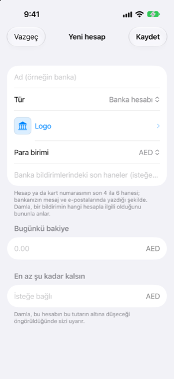

Kılavuz › Hesaplar, kartlar ve kişiler
Logolar ve hesap ayrıntıları
Bir hesabı adlandırın, bir logo seçin, Damla'nın onu tanıması için kullanacağı haneleri belirleyin.
Damla'daki her hesabın bir adı ve bir rozeti vardır — bankasının logosu, ya da adının ilk harfleriyle bir renk. Hesabın ya da kart numarasının son hanelerini de taşıyabilir. Ad ve rozet size aittir, böylece hesabı bir bakışta tanırsınız. Haneler Damla içindir: ona bir banka mesajının hangi hesapla ilgili olduğu söylenir.

Ne zaman kullanılır
- Bir hesap ekliyorsunuz ve ona bir ad ile bankasının logosunu vermek istiyorsunuz.
- Damla, kartın ya da hesabın hanelerini henüz bilmediği için bir banka bildirimi Gelen Kutusu'nda bekliyor.
- Daha sonra bir hesabı yeniden adlandırmak, içinde en az bir bakiye tutmak, onu tahminin dışında bırakmak ya da arşivlemek istiyorsunuz.
Adım adım
Bir hesabı adlandırın ve logo seçin
- Bir hesap eklerken (Hesaplar, artı düğmesi, Hesap ekle) Ad (örneğin banka) alanına bir ad yazın.
- Logo satırına dokunun. Logo ekranı Logo yok (baş harfler) — hesabın ilk harfleriyle bir renk rozeti —, Bankalar altında bir banka listesi ve Listede yok mu? altında bir arama sunar.
- Listeden kullanmak istediğiniz bankaya dokunun.
- Banka listede yoksa, adını Banka adı alanına yazın ve Logoyu internette bul düğmesine dokunun.
- İstediğiniz sonuca dokunun. Damla onu indirir ve bu telefonda saklar. Logoyu olduğu gibi bırakmak için Vazgeç düğmesine dokunun.
Banka adı alanı, hesabın adıyla başlar, ama onu değiştirebilirsiniz. Örneğin bir bankada Maas adlı bir hesap, bankanın adıyla aranabilir. Yazdığınız şey, hesabın adından farklı olduğu an, yerleşik liste eşleşen bankalara daralır. Hiçbir şey eşleşmezse, listenin tamamı geri gelir.
Damla'nın eşlemesi gereken haneleri kaydedin
- Hesabı eklediğinizde Banka bildirimlerindeki son haneler (isteğe bağlı) alanına yazın: hesap ya da kart numarasının son 4 ila 6 hanesi, bankanızın bunları mesajlarında ve e-postalarında yazdığı şekilde.
- Bunları daha sonra eklemek için — ya da başka bir numara eklemek için — hesabı açın, çevirmek için karta dokunun ve Ayrıntılar düğmesine dokunun.
- Banka bildirimlerindeki numaralar altında haneleri alana yazın ve Ekle (artı işareti) düğmesine dokunun.
- Kayıtlı bir numarayı kaldırmak için üzerinde kaydırın.
- Kaydet düğmesine dokunun.
Bilmenizde yarar var
- Haneler, Damla'ya bir bildirimin hangi hesapla ilgili olduğunu söyler. Son 4 ya da 6 hane yeterlidir; bankanız 4 hane yazdırıyorsa ve siz 6 haneyi kaydettiyseniz, yine de eşleşirler.
- Damla 4 ila 8 hane kabul eder ve aynı haneler iki hesaba kaydedilemez.
- Her kart ya da hesaptan gelen ilk bildirim Gelen Kutusu'na gider, çünkü Damla son hanelerini henüz bilmez. Bir kez tamamlayın ve Damla haneleri kalıcı olarak hatırlar. Hesabın Ayrıntılar'ında bunları yine kaldırabilirsiniz.
- Logoyu internette bul yalnızca siz dokunduğunuzda çalışır. Yalnızca yazdığınız banka adını bir logo araması olarak Wikimedia Commons'a gönderir. Ne tutarlar ne de başka ayrıntılar gönderilir. Onayladığınız logo bu telefonda önbelleğe alınır.
- Ad gönderilmeden önce hesabı bankadan çok tanımlayan kelimeler — birikim, vadesiz, kart ve benzeri — ondan çıkarılır. Damla, art arda en çok üç arama kalıbı deneyebilir ve bir şey bulan ilkinde durur.
- Logolar bankalarına aittir ve sizin kendi kullanımınız içindir.
- Logo satırı ayrıca hesabın Ayrıntılar ekranındadır; böylece bir logoyu herhangi bir zamanda değiştirebilirsiniz.
- Diğer ayarlar aynı Ayrıntılar ekranında durur: En az şu kadar kalsın, Damla'nın sizi uyardığı en az bakiye (kartlar ve krediler için gösterilmez); Tahmine dahil et; ve Hesabı arşivle. Arşivlemek hesabın geçmişini korur ve hesap, formlardan ve tahminden kaybolur.
- Logo, hesabın satırında ve Hesaplar'daki kartında görünür.
İlgili
Anlaşılmayan ya da eksik bir şey mi var? support@raveniq.ai adresine yazın ve hangi sayfa olduğunu belirtin.